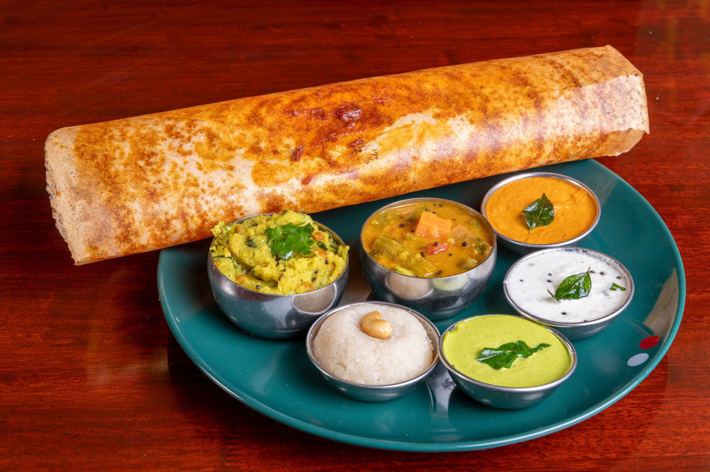

Masala Dosa is a crispy, thin rice crepe filled with a spiced potato filling. It’s one of the most popular and iconic dishes of South India. Served with coconut chutney and tangy sambar, this savory dish is a perfect breakfast or dinner option.
Calories 250 kcal
Protein 6g
Carbohydrate 45g
Fat 8g
Cholesterol 0mg
Sodium 250mg